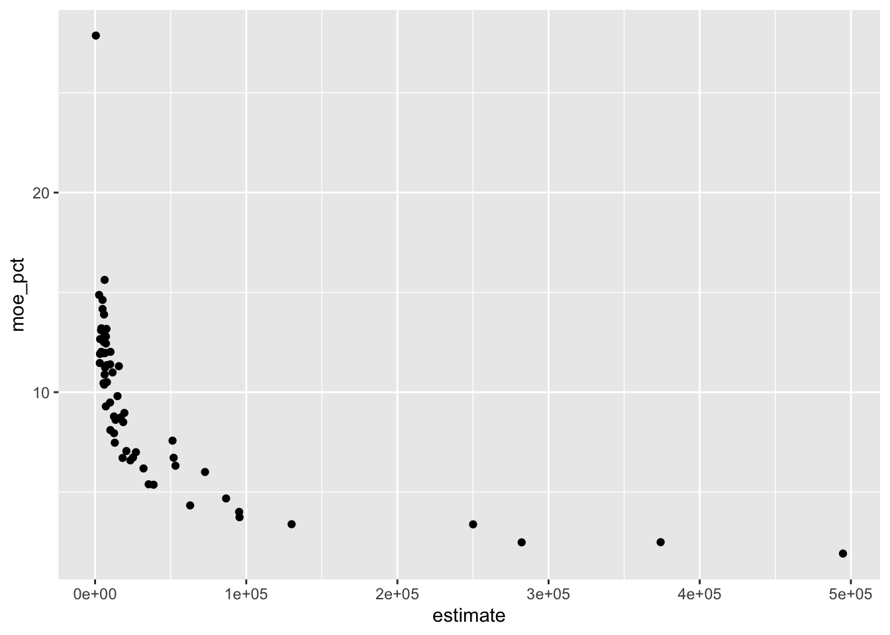
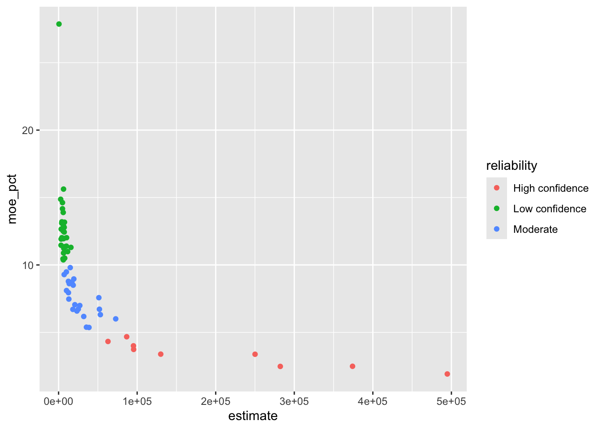
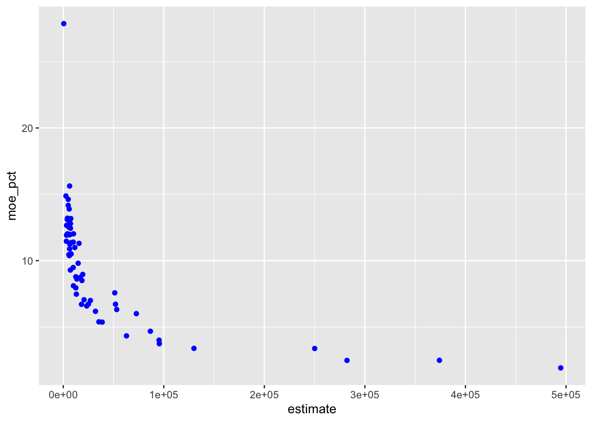
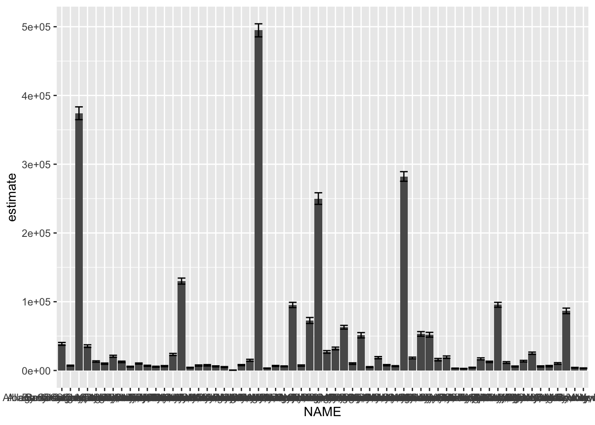
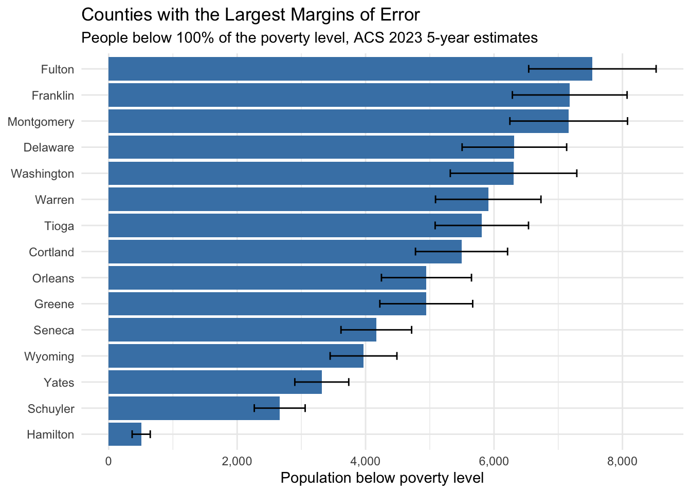
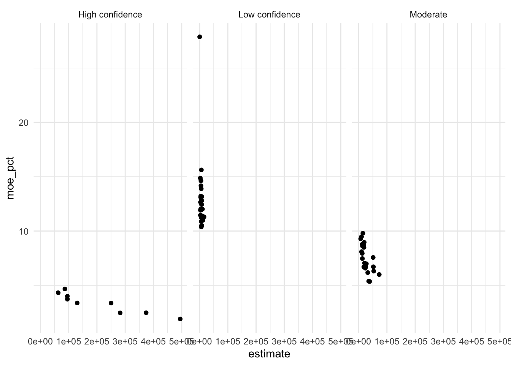
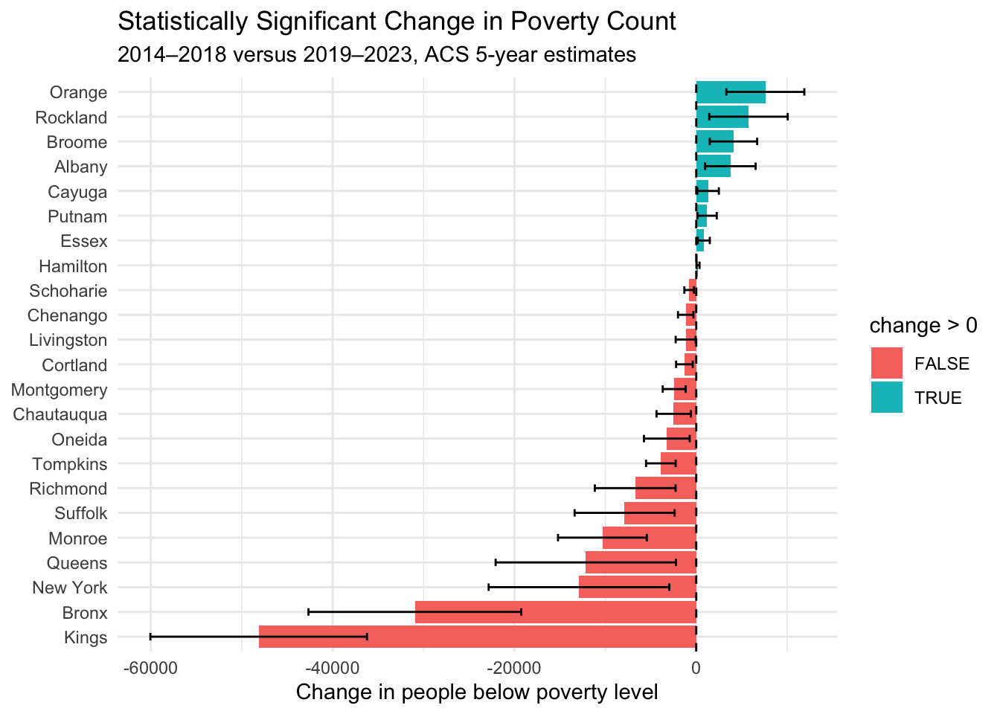

Week 3: Visualizing Uncertainty and Change
Using ggplot2, margins of error, and ACS data to study uncertainty over time.
This week connected data visualization with uncertainty in American Community Survey estimates. We practiced using ggplot2, calculating margins of error for derived values, comparing ACS estimates across time, and creating reusable R functions.
The examples use New York county data and the 2023 ACS 5-year survey. The charts are included in the rendered page, while the code is hidden.
Setup
Install these packages once in the R console, not inside this document:
install.packages(c("tidyverse", "tidycensus", "gt"))The Grammar of Graphics
ggplot2 creates plots by mapping variables in a data frame to visual properties.
| Data variable | Plot feature |
|---|---|
| Estimate | Position on an axis |
| Population | Position on an axis |
| Reliability | Color |
| Margin of error | Size or error bars |
This approach is called the Grammar of Graphics. A plot is built from separate parts that work together.
Creating ACS Data
B17001_002 represents the number of people below 100% of the poverty level.
Important columns include:
GEOID: geographic identifierNAME: county nameestimate: Census estimatemoe: margin of error
Relative Margin of Error
To compare uncertainty across counties, calculate the margin of error as a percentage of the estimate:
A relative margin of error is useful because the same absolute MOE can have different meanings for different-sized estimates.
Reliability Categories
case_when() checks conditions from top to bottom. The first condition that is TRUE determines the category. The final TRUE catches all remaining values.
Basic Scatterplot
A basic ggplot2 plot contains the data, aesthetic mappings, and a geometric object.
The first argument must be the name of an actual data frame. For example, ggplot(data, ...) would be incorrect here because data is only a placeholder.
Mapping Versus Decorating
When a visual property depends on a variable, put it inside aes():

When every point should have the same color, put the color outside aes():

aes(color = reliability) # maps a variable
geom_point(color = "blue") # sets one fixed colorCommon Geometries
| Question | Useful geometry |
|---|---|
| How is one variable distributed? | geom_histogram() |
| How are two variables related? | geom_point() |
| How do groups compare? | geom_boxplot() or geom_col() |
| How does something change over time? | geom_line() |
| How uncertain is an estimate? | geom_errorbar() |
Error Bars
An error bar shows the estimate together with its margin of error:

The first aes() supplies mappings shared by the layers. The second aes() supplies the ymin and ymax mappings needed specifically by geom_errorbar().
The full chart is difficult to read, so we can keep the 15 counties with the largest relative margins of error:

Facets and Themes
A facet creates a separate panel for each category:

Themes change the appearance of a plot without changing the data.
Derived Uncertainty
When we calculate a new value from Census estimates, the new value also has uncertainty. We should not simply add individual margins of error when adding estimates.
[1] 9594[1] 889.1648The tidycensus functions for derived uncertainty are:
moe_sum()for adding estimatesmoe_prop()for one estimate as a share of anothermoe_ratio()for a ratio where the numerator is not a subset of the denominator
Proportions and moe_prop()
Suppose we want the proportion of people below poverty out of a total population. Both the numerator and denominator have estimates and margins of error.
If the proportion is multiplied by 100, its margin of error must also be multiplied by 100.
Coefficient of Variation
The coefficient of variation, or CV, measures sampling error relative to the estimate:
\[ CV = \frac{SE}{Estimate} \times 100 \]
Because the ACS generally uses a 90% margin of error:
\[ SE = \frac{MOE}{1.645} \]
Therefore:
cv = (moe / 1.645) / estimate * 100A lower CV means less uncertainty relative to the estimate. A higher CV means more sampling uncertainty.
Change Over Time
ACS 5-year estimates cover overlapping periods:
- The 2022 ACS 5-year estimate covers 2018–2022
- The 2023 ACS 5-year estimate covers 2019–2023
For a cleaner comparison, use non-overlapping periods such as 2014–2018 and 2019–2023.
When comparing income across time, adjust for inflation before interpreting the difference.
Creating a Reusable Function
An R function is a reusable set of instructions. This function takes a year as an argument, downloads the data, and creates a period label.
The function does not run when it is defined. It creates a recipe that can be used later.
Converting Long Data to Wide Data
The repeated ACS results are initially in long format:
| County | Period | Estimate |
|---|---|---|
| Albany County | 2014–2018 | 10,000 |
| Albany County | 2019–2023 | 12,000 |
We can convert them to wide format so both periods appear in the same row:
Calculating Change and Its Uncertainty
The difference between two estimates also has uncertainty. We calculate the standard error of the difference and use it to calculate a margin of error for the change.
Visualizing Significant Change

Creating a Reliability Table
| Population below 100% of the poverty level | |||||
| New York counties, ACS 2023 5-year estimates | |||||
| County | Estimate | MOE | CV (%) | Reliability | |
|---|---|---|---|---|---|
| 🟡 | Hamilton | 506 | 141 | 16.9 | Somewhat reliable |
| 🟢 | Washington | 6,304 | 985 | 9.5 | Reliable |
| 🟢 | Schuyler | 2,663 | 396 | 9.0 | Reliable |
| 🟢 | Greene | 4,945 | 723 | 8.9 | Reliable |
| 🟢 | Orleans | 4,948 | 701 | 8.6 | Reliable |
| 🟢 | Warren | 5,910 | 821 | 8.4 | Reliable |
| 🟢 | Seneca | 4,167 | 550 | 8.0 | Reliable |
| 🟢 | Fulton | 7,532 | 992 | 8.0 | Reliable |
| 🟢 | Wyoming | 3,968 | 520 | 8.0 | Reliable |
| 🟢 | Cortland | 5,494 | 717 | 7.9 | Reliable |
| 🟢 | Delaware | 6,317 | 814 | 7.8 | Reliable |
| 🟢 | Montgomery | 7,163 | 916 | 7.8 | Reliable |
| 🟢 | Yates | 3,318 | 420 | 7.7 | Reliable |
| 🟢 | Tioga | 5,810 | 727 | 7.6 | Reliable |
| 🟢 | Franklin | 7,179 | 893 | 7.6 | Reliable |
| 🟢 | Wayne | 10,174 | 1,223 | 7.3 | Reliable |
| 🟢 | Essex | 4,143 | 498 | 7.3 | Reliable |
| 🟢 | Columbia | 6,818 | 816 | 7.3 | Reliable |
| 🟢 | Genesee | 6,018 | 719 | 7.3 | Reliable |
| 🟢 | Lewis | 3,230 | 385 | 7.2 | Reliable |
| 🟢 | Schoharie | 3,106 | 356 | 7.0 | Reliable |
| 🟢 | Ontario | 9,961 | 1,135 | 6.9 | Reliable |
| 🟢 | Otsego | 7,741 | 879 | 6.9 | Reliable |
| 🟢 | Saratoga | 15,723 | 1,777 | 6.9 | Reliable |
| 🟢 | Livingston | 6,606 | 742 | 6.8 | Reliable |
| 🟢 | Sullivan | 11,547 | 1,269 | 6.7 | Reliable |
| 🟢 | Putnam | 6,331 | 689 | 6.6 | Reliable |
| 🟢 | Herkimer | 7,826 | 822 | 6.4 | Reliable |
| 🟢 | Chenango | 5,597 | 585 | 6.4 | Reliable |
| 🟢 | Madison | 6,033 | 626 | 6.3 | Reliable |
| 🟢 | Jefferson | 14,832 | 1,454 | 6.0 | Reliable |
| 🟢 | Cayuga | 9,914 | 940 | 5.8 | Reliable |
| 🟢 | Allegany | 7,095 | 659 | 5.6 | Reliable |
| 🟢 | Schenectady | 19,384 | 1,737 | 5.4 | Reliable |
| 🟢 | Chemung | 12,500 | 1,098 | 5.3 | Reliable |
| 🟢 | St. Lawrence | 16,924 | 1,478 | 5.3 | Reliable |
| 🟢 | Tompkins | 13,547 | 1,167 | 5.2 | Reliable |
| 🟢 | Oswego | 18,598 | 1,581 | 5.2 | Reliable |
| 🟢 | Clinton | 10,097 | 818 | 4.9 | Reliable |
| 🟢 | Steuben | 12,537 | 996 | 4.8 | Reliable |
| 🟢 | Orange | 51,238 | 3,880 | 4.6 | Reliable |
| 🟢 | Cattaraugus | 13,039 | 974 | 4.5 | Reliable |
| 🟢 | Chautauqua | 20,703 | 1,460 | 4.3 | Reliable |
| 🟢 | Niagara | 27,014 | 1,889 | 4.3 | Reliable |
| 🟢 | Ulster | 25,084 | 1,687 | 4.1 | Reliable |
| 🟢 | Rockland | 51,969 | 3,490 | 4.1 | Reliable |
| 🟢 | Rensselaer | 18,177 | 1,219 | 4.1 | Reliable |
| 🟢 | Dutchess | 23,328 | 1,536 | 4.0 | Reliable |
| 🟢 | Richmond | 53,177 | 3,358 | 3.8 | Reliable |
| 🟢 | Oneida | 32,026 | 1,979 | 3.8 | Reliable |
| 🟢 | Nassau | 72,719 | 4,365 | 3.6 | Reliable |
| 🟢 | Broome | 35,448 | 1,909 | 3.3 | Reliable |
| 🟢 | Albany | 38,700 | 2,076 | 3.3 | Reliable |
| 🟢 | Westchester | 86,670 | 4,053 | 2.8 | Reliable |
| 🟢 | Onondaga | 62,884 | 2,721 | 2.6 | Reliable |
| 🟢 | Monroe | 95,297 | 3,815 | 2.4 | Reliable |
| 🟢 | Suffolk | 95,543 | 3,570 | 2.3 | Reliable |
| 🟢 | Erie | 130,009 | 4,402 | 2.1 | Reliable |
| 🟢 | New York | 250,056 | 8,449 | 2.1 | Reliable |
| 🟢 | Bronx | 374,138 | 9,301 | 1.5 | Reliable |
| 🟢 | Queens | 282,195 | 6,988 | 1.5 | Reliable |
| 🟢 | Kings | 494,754 | 9,477 | 1.2 | Reliable |
| Reliability thresholds: CV < 12% reliable, 12–40% somewhat reliable, and > 40% unreliable. | |||||
Key Lessons
This week connected visualization with statistical reasoning.
- Choose a plot that matches the question.
- Use the actual data frame name in
ggplot(). - Put variable mappings inside
aes(). - Put fixed visual settings outside
aes(). - Use error bars to show uncertainty.
- Use
moe_sum()when adding estimates. - Use
moe_prop()when calculating a proportion. - Avoid overlapping ACS periods when studying change.
- Calculate the uncertainty around differences over time.
- Do not describe a change as meaningful without checking its uncertainty.
Questions for Further Practice
- Can I create a plot using my own ACS data?
- Can I explain the difference between an estimate, an MOE, a standard error, and a CV?
- Can I explain why two estimates may look different without representing a statistically significant change?
- Can I write a function that pulls data for more than one year?
- Can I create a table that includes estimates, margins of error, and reliability categories?